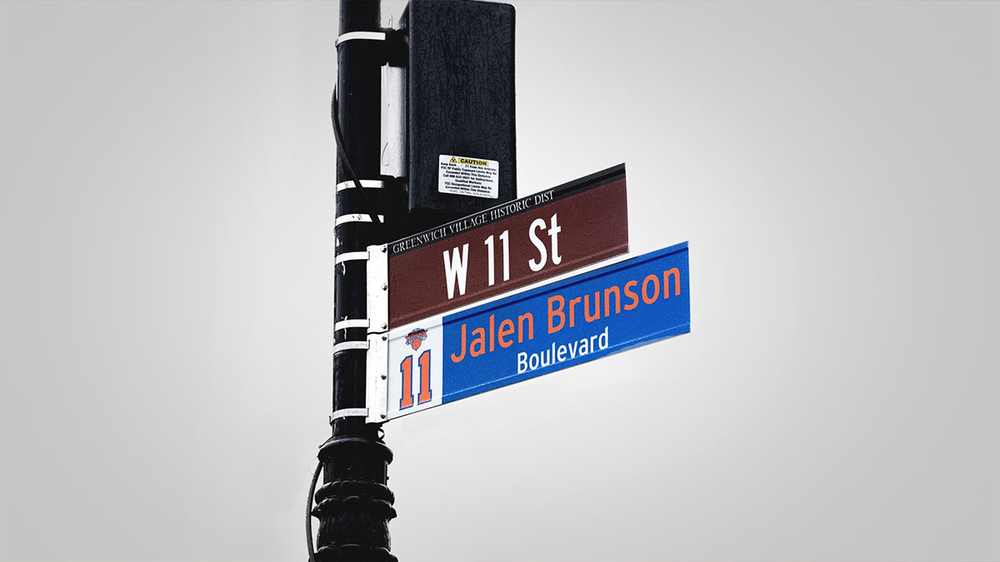
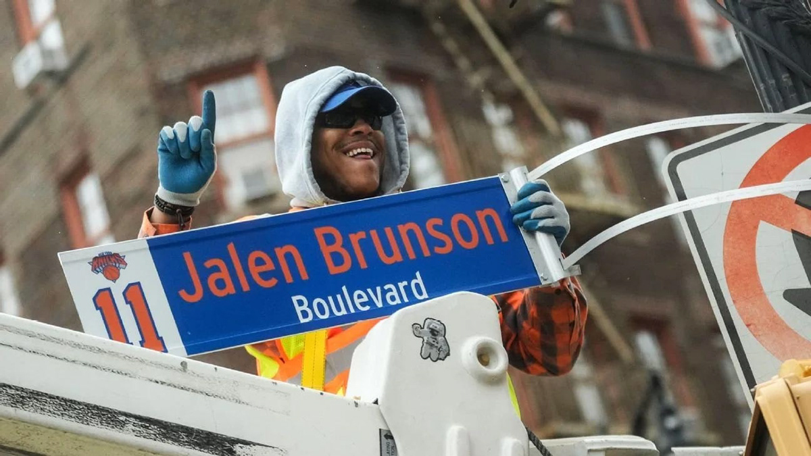
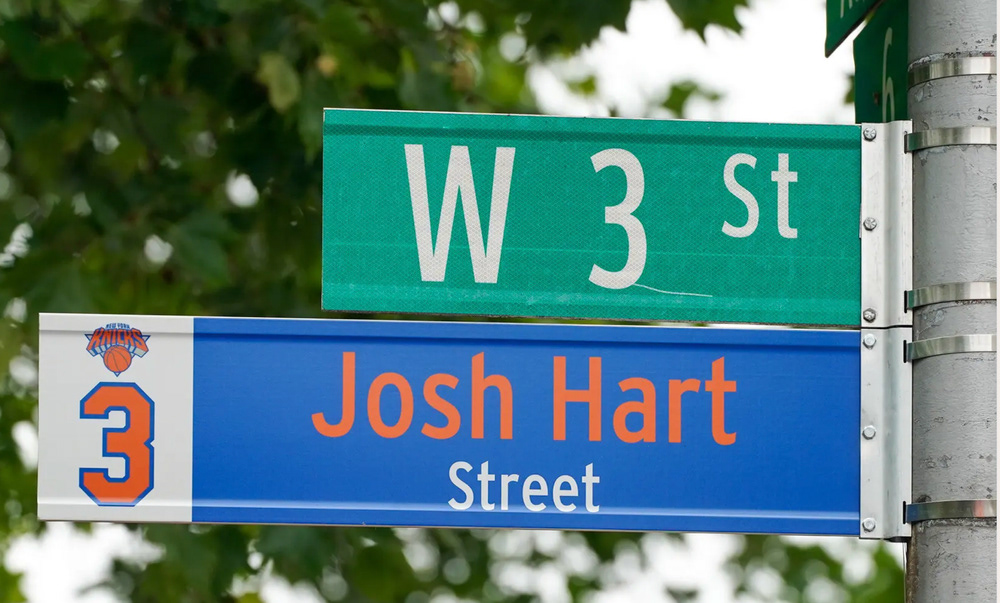
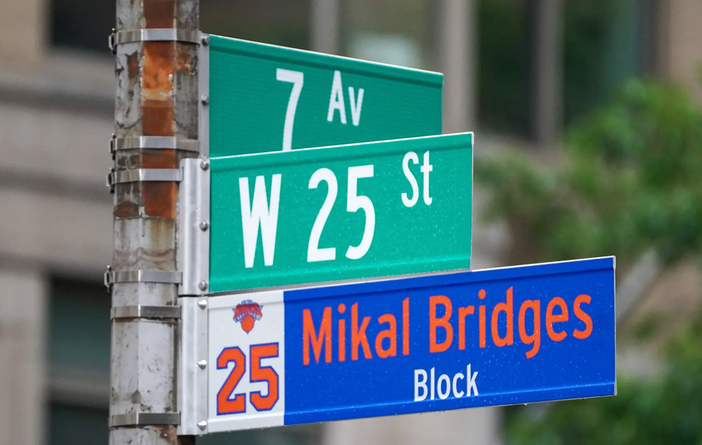
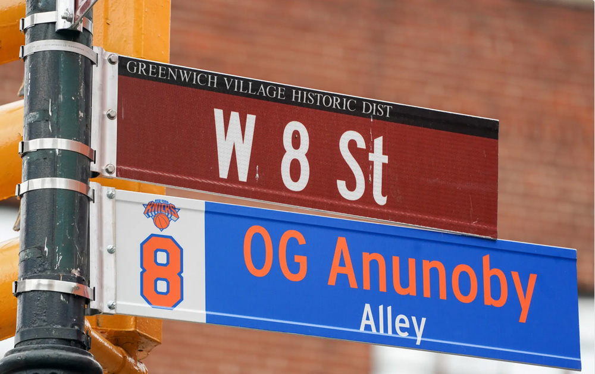
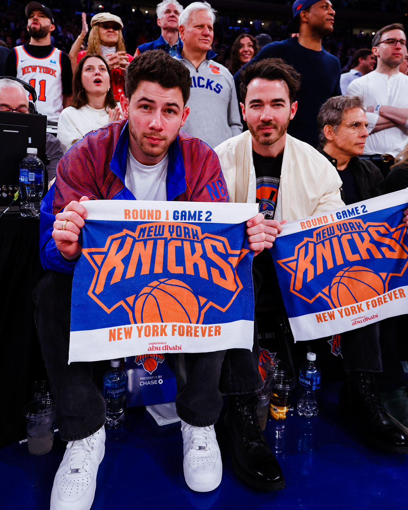

RoleBrand Designer, New York Knicks
The briefGive the Knicks' 2025 playoff run a citywide moment worthy of the team.
What I didCreated the street-sign campaign that renamed New York corners for Knicks stars, like Jalen Brunson Boulevard, turning player tributes into pieces of city iconography.
OutcomeWon a 2025 Clio Sports Award, Silver for Fan Engagement in Experience & Activation.





